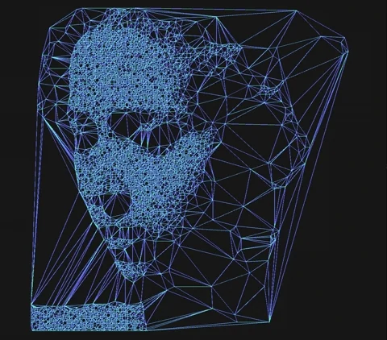

John McCarthy
 Marvin Minsky
Marvin MinskyAlan Turing
O que é Inteligência Artificial?Inteligência Artificial (IA) é uma área da computação que cria sistemas capazes de executar tarefas que normalmente exigem inteligência humana. Ela envolve o uso de algoritmos e modelos para permitir que máquinas aprendam, raciocinem, reconheçam padrões e tomem decisões. As principais técnicas incluem aprendizado de máquina (machine learning), redes neurais, e processamento de linguagem natural. Aplicações comuns da IA estão presentes em assistentes virtuais, diagnósticos médicos, carros autônomos, sistemas de recomendação e chatbots. Além de melhorar a eficiência e a precisão em diversos setores, a IA também traz desafios, como o risco de viés, impacto no emprego e questões éticas. |
|
 |
IA está transformando várias indústrias ao redor do mundo.
Aqui estão algumas das principais aplicações:
| Setor | Aplicação | Exemplo |
|---|---|---|
Saúde |
Algoritmos de IA analisam exames de imagem e dados médicos para detectar doenças, como câncer e problemas cardíacos, com alta precisão. | IA na Saúde |
Internet das Coisas (IoT) |
Assistentes virtuais, que incluem ferramentas como Alexa, Google Assistant e Siri, ajudam com tarefas diárias, como controlar dispositivos, definir lembretes e responder perguntas. | IA e IOT |
Telecomunicações |
Empresas usam IA para oferecer suporte 24/7 através de Chatbots para atendimento ao cliente respondendo dúvidas comuns e agilizando atendimentos. | IA e Chatbots |
Entretenimento |
Plataformas como Netflix e Spotify utilizam sistemas de recomendação e sugerem filmes, séries e músicas com base no comportamento e preferências do usuário. | IA e Sistemas de Recomendação |
Vantagens da Inteligência Artificial |
|---|
Automação de ProcessosReduz tarefas repetitivas e operacionais, aumentando a eficiência.Tomada de Decisão Rápida e PrecisaCanalisa grandes volumes de dados em pouco tempo, auxiliando na tomada de decisões estratégicas.Redução de Erros HumanosMinimiza falhas comuns em processos manuais, aumentando a precisão e confiabilidade.Personalização e Melhoria na Experiência do UsuárioOferece serviços e produtos customizados com base em preferências e comportamentos individuais.Disponibilidade 24/7Sistemas de IA podem operar continuamente sem necessidade de descanso, garantindo atendimento constante. |
Desafios da Inteligência Artificial |
|---|
Ética e PrivacidadeQuestões sobre uso de dados pessoais e decisões automáticas sem intervenção humana.Viés nos AlgoritmosIA pode reproduzir ou amplificar preconceitos presentes nos dados de treinamento.Impacto no Mercado de TrabalhoAutomação pode substituir empregos tradicionais, gerando desemprego em certos setores.Segurança e ConfiabilidadeSistemas autônomos precisam ser seguros para evitar falhas críticas e ciberataques.Alto Custo de ImplementaçãoDesenvolvimento e manutenção de tecnologias de IA exigem recursos financeiros e mão de obra especializada. |
Marvin MinskyEntre em contato conosco para mais informações sobre Inteligência Artificial.
Parabéns, você adquiriu conhecimento! |
Obrigada por ler até aqui! |